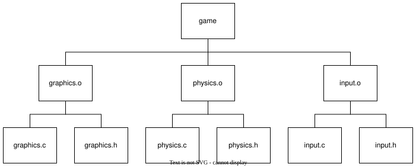

Understanding Makefiles: An Incremental Approach
Introduction
Makefiles might seem daunting, especially for beginners. Often,
learning resources dive straight into advanced concepts without
covering the essentials and most importantly without taking the
time to define make's terminology and concepts. This article
takes a different route. We'll explore how to craft a Makefile,
focusing specifically on C projects. While
make is a versatile tool applicable to various
languages, our discussion will center around its use in C
programming.
Understanding Makefiles requires a foundational grasp of how C programs are
compiled and how make interacts with files. So, let's start from the
basics and build up our knowledge step by step.
While this article may seem lengthy, investing the time to thoroughly
understand it will boost your confidence in using make and crafting
your own Makefiles. So, let's get started!
How C programs are compiled
The simplest way to compile a C program is with a command like:
cc myprogram.c -o myprogram
This converts the C source file myprogram.c into an executable named
myprogram. It's easy to assume that compilation is a single-step process.
However, in reality, C compilation involves several stages:
- Preprocessing: This step involves the preprocessor parsing the source file. It expands macros, replaces comments with spaces, and substitutes #include directives with the actual content of included files.
- Compiling: The compiler turns the preprocessed source into an object file, typically with a
.oextension. These files are written in machine code but are not directly executable. - Linking: The final step. Here, the linker combines object files from various modules into one. It also links functions used from libraries into your code. A thorough exploration of the entire compilation process is beyond this article's scope, but these steps are essential to understand before diving into make and Makefiles.
In summary, C programs primarily consist of two types of files: source files (.c) and header
files (.h). In the preprocessing stage, #include directives in the source files
are
replaced with the actual content of the corresponding header files. After preprocessing, these C files
undergo
compilation to become object files (.o), which are then linked to create the final executable.
You can tell
the compiler to not run the linker by using the -c flag i.e cc -c myprogram.c will
output myprogram.o.
How make works
The definition of make as described in the POSIX standard may
appear formal, but it is crucial for understanding
its functionality. We will analyze this definition, focusing on its
key components. To help us in this task, we'll use an example from
an excellent
tutorial on writing POSIX compliant Makefiles. This tutorial is
also a recommended read, as it inspired this article. Our example
is a simple game composed of three C files:
graphics.c, physics.c, and
input.c, along with their corresponding header files
graphics.h, physics.h, and
input.h.

So, what does this definition tell us ? First of all that make
- Introduce the concept of dependancy tree, targets, prerequisites and commands.
- Illustrate the concept of a dependency tree.
- Explain how .c and .h files are the leaves, .o files are the branches, and the final executable is the trunk.
- Discuss how Make uses this tree to determine what needs to be recompiled when a file changes.
- Explain the syntax of a basic Makefile.
- Use the example of a basic game with graphics.c, physics.c, and input.c.
- Show how these files can be compiled individually into object files.
- Provide a simple Makefile example:
game: graphics.o physics.o input.o
cc -o game graphics.o physics.o input.o
graphics.o: graphics.c graphics.h
cc -c graphics.c
physics.o: physics.c physics.h
cc -c physics.c
input.o: input.c input.h
cc -c input.c
Towards a more generic Makefile
- Introduce new features one by one to create more powerful Makefiles
Conclusion
Recap the importance of Makefiles in C programming. Encourage readers to experiment with their own Makefiles. Provide resources for further learning.